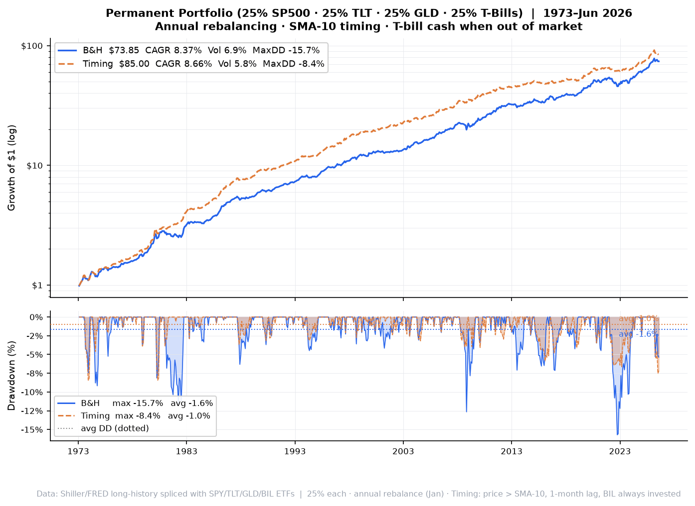
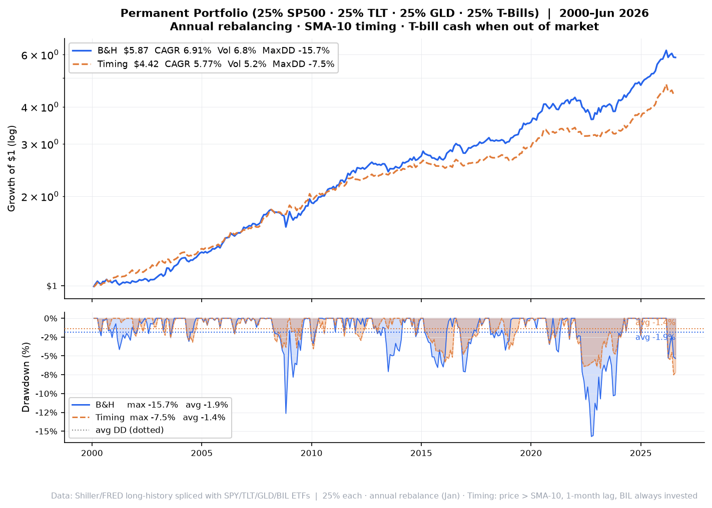

25% S&P 500 · 25% Long Bond (TLT) · 25% Gold (GLD) · 25% T-Bills (BIL) · Annual rebalancing
| Strategy | CAGR | Volatility | Sharpe | Max DD | Avg DD | Ulcer | $1 → |
|---|---|---|---|---|---|---|---|
| Buy & Hold | +8.37% | 6.92% | 1.198 | -15.70% | -1.64% | 3.03 | $73.85 |
| Timing SMA-10 | +8.66% | 5.80% | 1.463 | -8.42% | -1.00% | 1.88 | $85.00 |
| Strategy | CAGR | Volatility | Sharpe | Max DD | Avg DD | Ulcer | $1 → |
|---|---|---|---|---|---|---|---|
| Buy & Hold | +6.91% | 6.80% | 1.015 | -15.70% | -1.87% | 3.31 | $5.87 |
| Timing SMA-10 | +5.77% | 5.17% | 1.110 | -7.52% | -1.36% | 2.20 | $4.42 |
$1 invested · log scale (top) · drawdown + avg DD lines (bottom) · B&H $73.85 | Timing $85.00

$1 invested · log scale (top) · drawdown + avg DD lines (bottom) · B&H $5.87 | Timing $4.42

Portfolio construction: Equal 25% allocation to S&P 500, 20-year Treasury bond, gold, and T-bills. Rebalanced annually at the start of each January. Between rebalances weights drift with market returns.
Timing rule: SPY, TLT, and GLD are each independently timed using their own 10-month SMA. Price > SMA → invested in that asset. Price ≤ SMA → that leg moves to T-bills. BIL is always invested (it is already the cash instrument).
Warm-up & base date: SMA is seeded using monthly prices from Jan 1963 onwards. For the 1973 study, the first return (Jan 1973) uses the Dec 1972 → Jan 1973 price change, so no return month is discarded. Signal for Jan 1973 is based on Dec 1972 price vs SMA.
Annual rebalance: Notional leg values reset to 25% each January. The timing signal within each leg is unaffected by rebalancing.
Bond return model: FRED DGS20 yield-derived total return with convexity correction. Spliced with TLT ETF from 2002.
Gold: Kitco/GitHub spot price series from 1963. Spliced with GLD ETF from Nov 2004.
No transaction costs, taxes or leverage.